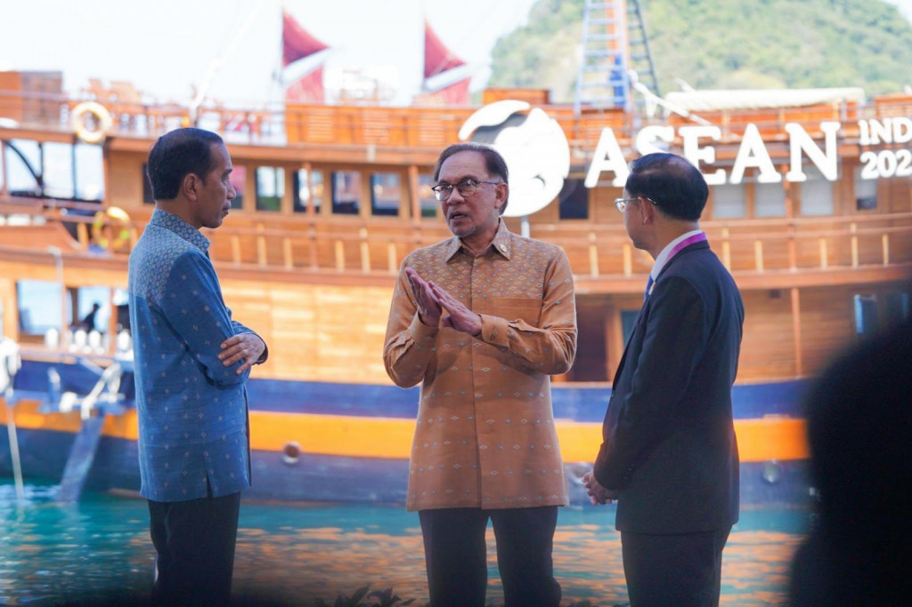
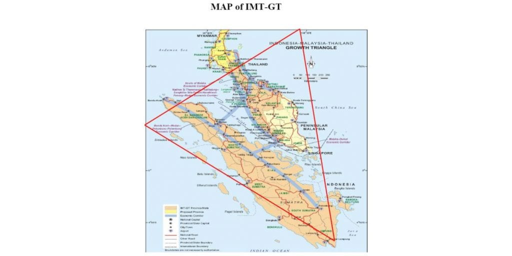
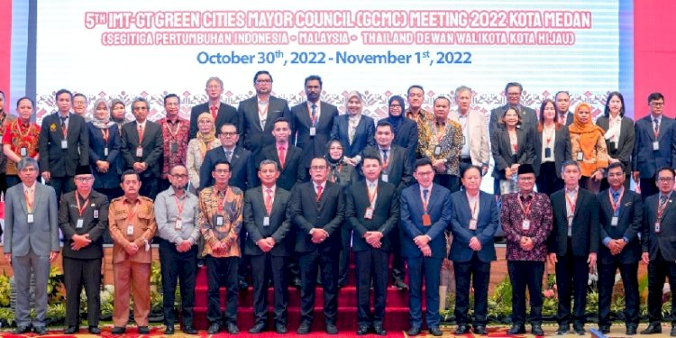
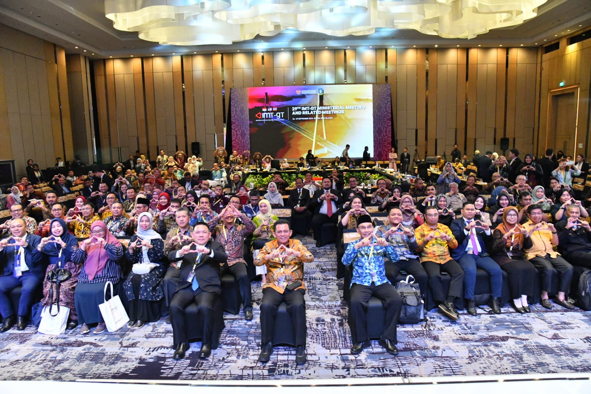
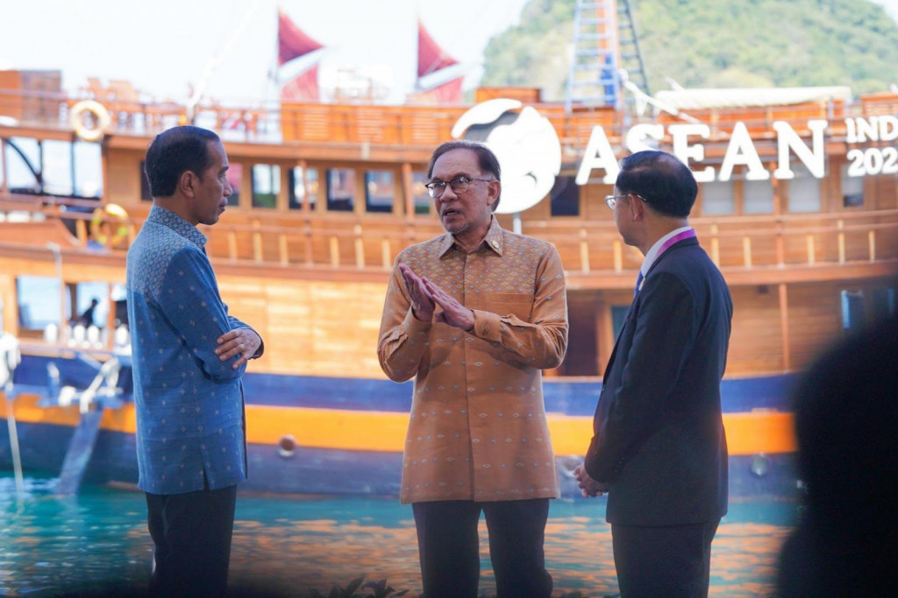
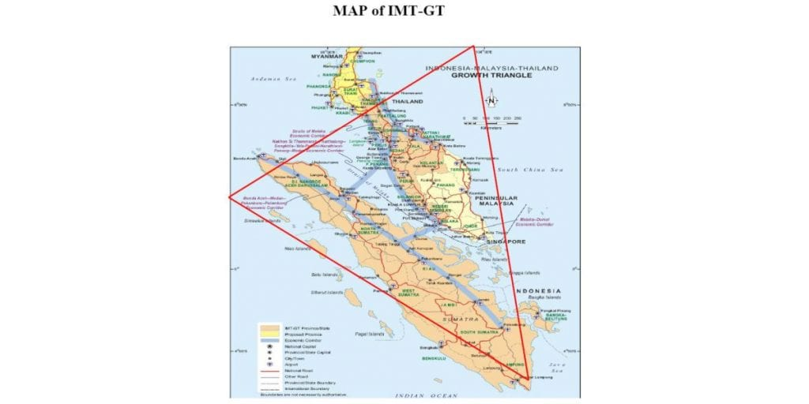
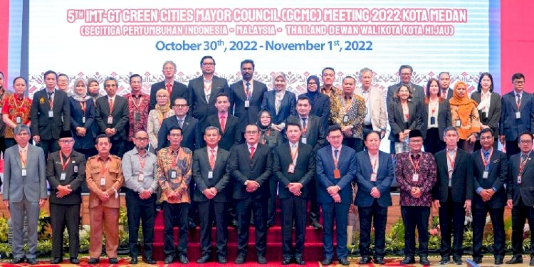
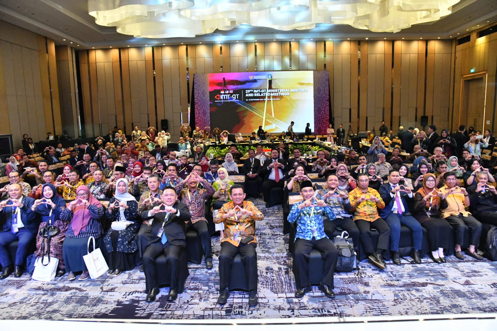

Penjelasan
Segitiga Pertumbuhan Indonesia-Malaysia-Thailand (IMT-GT) adalah sebuah inisiatif kerjasama ekonomi yang
melibatkan tiga negara di Asia Tenggara: Indonesia, Malaysia, dan Thailand. Inisiatif ini bertujuan
untuk mendorong pembangunan ekonomi yang lebih terintegrasi dan memperkuat kerjasama antara
wilayah-wilayah yang terletak di ujung barat daya Semenanjung Malaya dan Sumatera, Indonesia. Segitiga
Pertumbuhan ini mencakup wilayah yang kaya akan sumber daya alam dan potensi ekonomi, serta memiliki
peluang besar untuk saling mendukung dalam berbagai sektor, seperti perdagangan, industri, pariwisata,
dan infrastruktur.
Latar Belakang dan Tujuan IMT-GT dimulai pada tahun 1993 dengan tujuan utama untuk memperkuat hubungan
ekonomi antara ketiga negara. Wilayah yang dilibatkan dalam kerjasama ini adalah Sumatera di Indonesia,
bagian utara Malaysia, dan bagian selatan Thailand. Tujuan utama dari pembentukan IMT-GT adalah untuk
mempercepat pembangunan ekonomi, mengurangi kesenjangan ekonomi antarwilayah, serta meningkatkan daya
saing kawasan ini di tingkat global. Segitiga ini diharapkan dapat mendorong aliran barang, jasa, dan
investasi yang lebih bebas dan lancar antara ketiga negara.
Potensi Ekonomi dan Sumber Daya Alam yang dimiliki oleh wilayah IMT-GT sangat besar. Indonesia,
Malaysia, dan Thailand masing-masing memiliki sumber daya alam yang melimpah, seperti minyak, gas, dan
produk pertanian. Wilayah Sumatera, misalnya, kaya akan minyak bumi, gas alam, kelapa sawit, serta
berbagai hasil pertanian lainnya. Sementara itu, Thailand dan Malaysia memiliki sektor industri yang
maju, terutama dalam produk elektronik, otomotif, dan tekstil. Kolaborasi antara ketiga negara ini
memungkinkan pemanfaatan optimal dari sumber daya alam yang ada, sehingga dapat meningkatkan daya saing
global.
Infrastruktur dan Konektivitas menjadi salah satu aspek penting dalam pengembangan IMT-GT. Untuk
mendukung pertumbuhan ekonomi yang lebih integratif, diperlukan pembangunan infrastruktur yang memadai,
baik dalam hal transportasi, energi, maupun teknologi informasi. Salah satu proyek utama adalah
peningkatan konektivitas darat antara ketiga negara, seperti pembangunan jalan raya lintas negara yang
menghubungkan wilayah Sumatera dengan Malaysia dan Thailand. Selain itu, pembangunan infrastruktur
pelabuhan dan bandara yang lebih modern juga menjadi prioritas untuk meningkatkan perdagangan dan
pariwisata antarnegara.
Perdagangan dan Investasi juga menjadi fokus utama dari Segitiga Pertumbuhan IMT-GT. Ketiga negara
memiliki hubungan perdagangan yang erat, dengan Malaysia dan Thailand sebagai mitra utama bagi
Indonesia. Melalui pembentukan zona perdagangan bebas dan berbagai insentif investasi, kerjasama ekonomi
di kawasan ini dapat tumbuh lebih pesat. Selain itu, sektor pariwisata juga menjadi sumber pendapatan
penting bagi ketiga negara, mengingat kawasan ini memiliki keindahan alam yang luar biasa, seperti
pantai, gunung, dan warisan budaya yang kaya.
Tantangan dan Peluang yang dihadapi oleh IMT-GT meliputi masalah ketimpangan pembangunan antara kawasan
barat dan timur, serta isu-isu sosial dan politik yang mungkin menghambat integrasi ekonomi. Meskipun
demikian, kerjasama ini menawarkan peluang besar untuk menciptakan kawasan yang lebih stabil dan makmur,
dengan memperhatikan keberlanjutan dan pengelolaan sumber daya alam yang bijaksana. Ke depannya, IMT-GT
dapat menjadi model kerjasama yang sukses di Asia Tenggara, yang mengedepankan prinsip-prinsip inklusif
dan berkelanjutan.
Secara keseluruhan, Segitiga Pertumbuhan Indonesia-Malaysia-Thailand merupakan sebuah langkah strategis
untuk meningkatkan kerjasama ekonomi regional di Asia Tenggara. Dengan memanfaatkan kekuatan sumber daya
alam, meningkatkan konektivitas, serta mendorong perdagangan dan investasi, IMT-GT berpotensi untuk
menjadi salah satu kawasan yang paling dinamis dan berkembang di Asia.